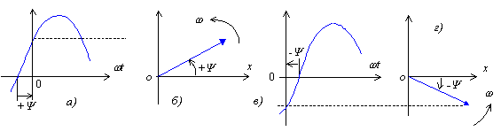

Начальная фаза (начальный фазовый
угол) - значение фазы при  ;
например, начальная фаза напряжения
;
например, начальная фаза напряжения  и т. д.
и т. д.
Начальная фаза  - алгебраическая
величина; ее знак определяют:
- алгебраическая
величина; ее знак определяют:

а) на временных диаграммах - по направлению отрезка, проведенного
от ближайшего нулевого значения функции на возрастающем ее участке
до начала координат: если это направление совпадает с направлением
времени б) на векторных диаграммах - направлением отсчета
угла от оси абсцисс (ох): если направление |
 , то начальная
фаза
, то начальная
фаза  берется с знаком
"плюс" (рис. а), если направление этого отрезка
обратное - с знаком "минус" (рис. в);
берется с знаком
"плюс" (рис. а), если направление этого отрезка
обратное - с знаком "минус" (рис. в);  совпадает с направлением вращения векторов на ВД (с направлением
совпадает с направлением вращения векторов на ВД (с направлением
 ), то начальная фаза
), то начальная фаза
 берется с знаком "плюс",
если направление угла
берется с знаком "плюс",
если направление угла  совпадает с ходом часовой стрелки, то она берется с знаком "минус"
(рис. б и г).
совпадает с ходом часовой стрелки, то она берется с знаком "минус"
(рис. б и г). (Фр.):